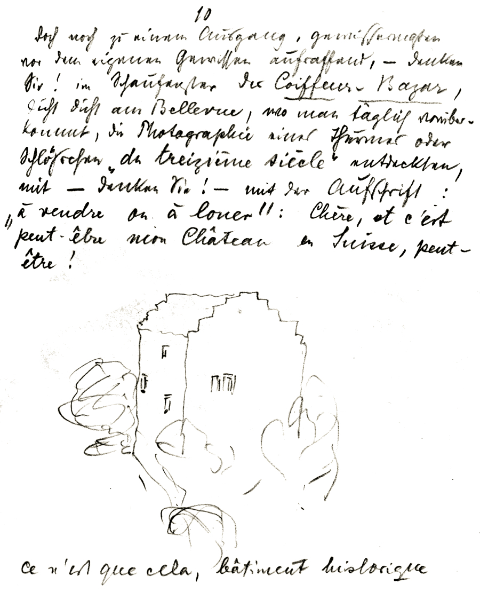
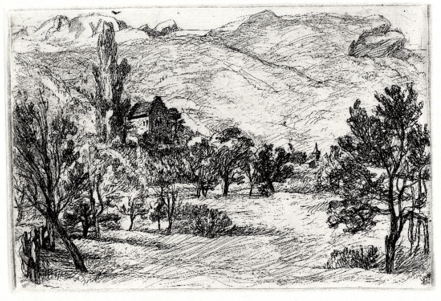
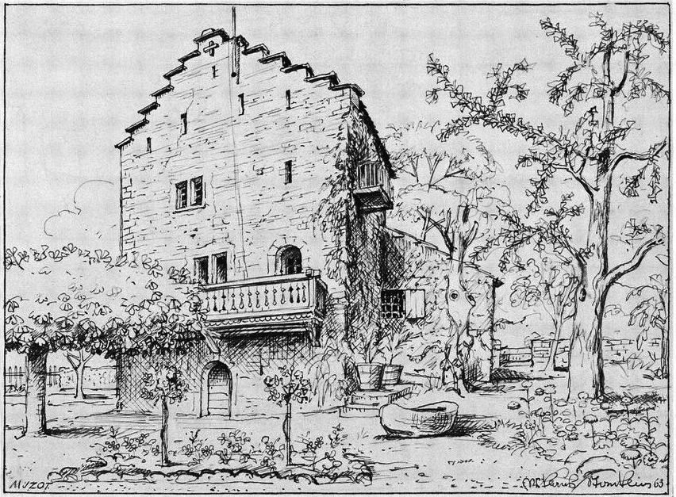
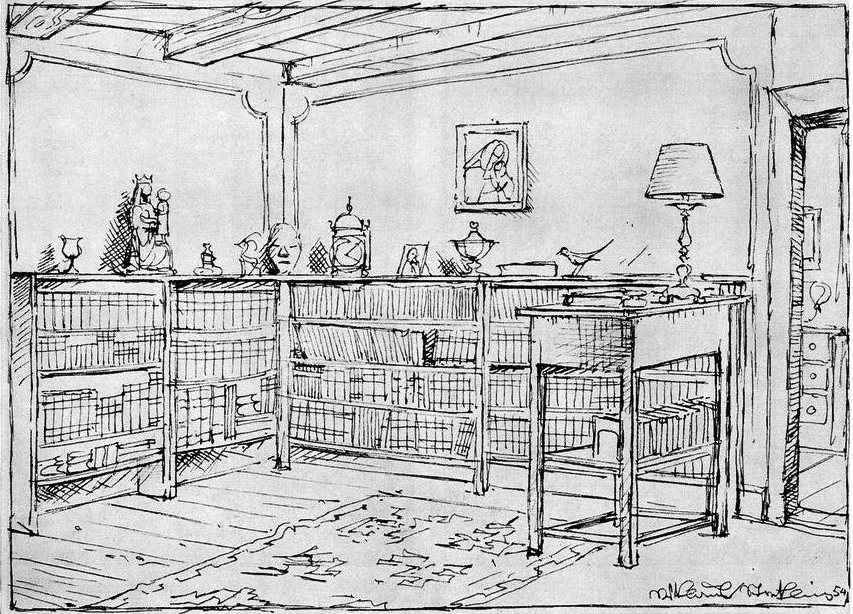
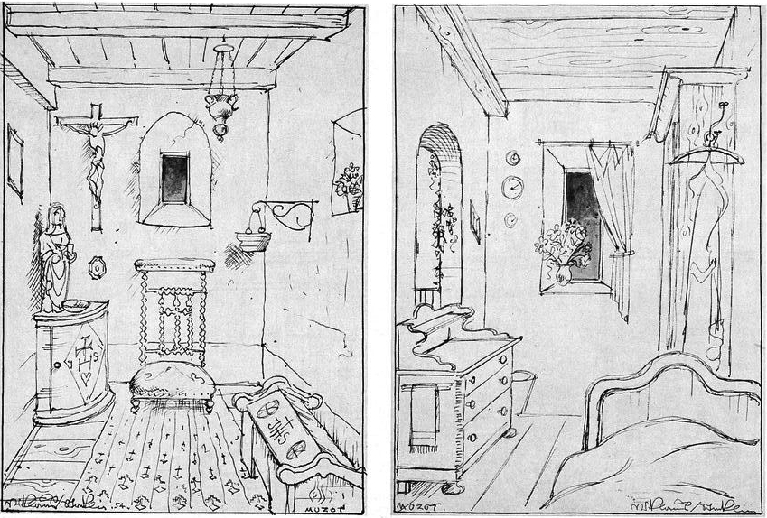
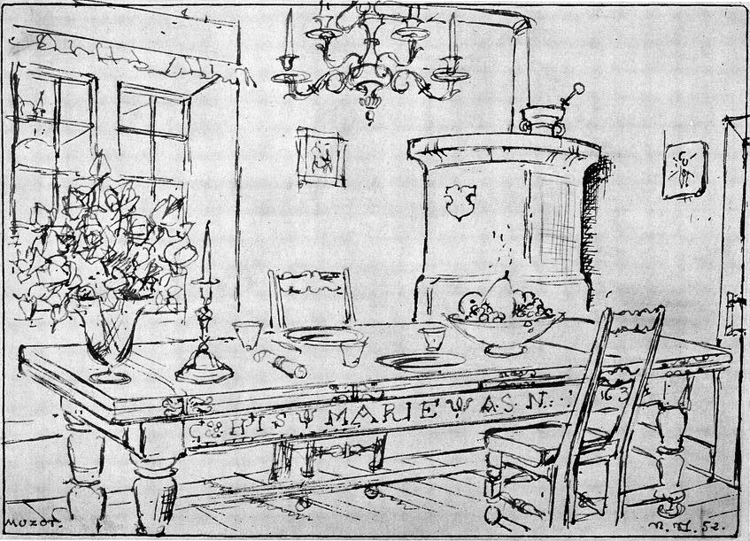

Muzot
Château de Muzot, ostatnia siedziba poety, miejsce narodzin Sonetów do Orfeusza oraz ukończenia Elegii duinejskich.
Niezwykła jest historia „odnalezienia” tej szwajcarskiej samotni. Rilke i Baladyna Klossowska od pewnego czasu poszukiwali stosownej siedziby, najpierw na terenie kantonu de Vaud, potem w kantonie Valais. 28 czerwca 1921 roku zatrzymali się w Sierre, zawiedli się jednak w swych nadziejach, że znajdą odpowiednie miejsce. Pełni rezygnacji byli już gotowi wracać do Genewy — lecz wtedy zdarzył się „cud”. W ostatni wieczór przed wyjazdem w oknie wystawowym salonu fryzjerskiego zobaczyli fotografię trzynastowiecznej wieży niewielkiego château, opatrzoną notatką „na sprzedaż lub do wynajęcia”. Znajdowała się ona w odległości kilku mil od Sierre. Mimo swych niedostatków — wodę czerpano ze studni, brakowało elektryczności — wydawała się spełniać wszelkie oczekiwania poety. „Chère — pisał Rilke do Nanny Wunderly — c'est peut-être mon Château en Suisse, peut-être”.
Ujrzawszy czworoboczną wieżę wznoszącą się pośrodku małego ogrodu, Rilke był urzeczony. Zachwyciła go również tamtejsza okolica, „la noble contrée”, jak określano tę część kantonu Valais, oraz niezwykła, majestatyczna uroda krajobrazu, ożywiająca w jego pamięci wspomnienia pejzaży Prowansji i Hiszpanii.
Akwaforta „Muzot in Sierre“ autorstwa Ernsta Georga Rüegg z roku 1921, podarowana poecie 30 XII 1921 z noworocznym pozdrowieniem przez Wernera Reinharta.
W pobliżu zamkowej wieży stała zaniedbana kapliczka pod wezwaniem św. Anny; dwa treliaże porośnięte kwitnącymi różami, wznoszące się w ogrodzie, do którego przylegał niewielki sad, dodawały temu miejscu uroku. U podnóża rozciągały się winnice, a przy rozwidleniu drogi rosła okazała topola, „niczym symbol i znak wykrzyknika, jak gdyby chciała rzec, jakby chciała potwierdzić: patrz, to tutaj!”.
Rozkład pokojów mieszczących się w czworobocznej wieży był bardzo wygodny. Na parterze budowli, do której wchodziło się przez zadaszony ganek, znajdowała się przestronna jadalnia, a w niej tradycyjny kamienny piec, charakterystyczny dla okolic Valais, oraz okazały dębowy stół z siedemnastego wieku. Do jadalni przylegał niewielki salon z balkonem, z którego roztaczał się widok na dolinę Rodanu; na parterze mieściła się ponadto mała sypialnia oraz kuchnia.
Na pierwszym piętrze znajdowało się kwadratowe pomieszczenie, w którym na belkach stropowych widniała data MDCXVII; Rilke przeznaczył je na swój gabinet. Przez okna wychodzące na południe i zachód można było podziwiać widniejące w oddali majestatyczne grzbiety Alp Walijskich. Poeta miał do dyspozycji również niewielką sypialnię, z której przez zwieńczone łukiem drzwi wychodziło się na wąski balkon; drzwi po drugiej stronie pokoju wiodły do małej bielonej komnaty, tak zwanej „kaplicy”. Piętro wyżej, na poddaszu znajdowały się dalsze pomieszczenia, jednak posiadały one jedynie otwory strzelnicze.
Dzięki mecenatowi Wernera Reinharta Muzot stało się po śmierci Rilkego domem dla malarzy, poetów, uczonych i muzyków. W zamkowej wieży mieszkali m.in. Paul Hindemith, Hans Carossa oraz Melchior Lechter. Jesienią roku 1952 gościli tam również bazylejski malarz Niklaus Stoecklin oraz jego żona Elisabeth. W swych pamiętnikach małżonkowie pozostawili pięć wykonanych piórkiem rysunków, oddających niezapomnianą urodę tego miejsca.
Muzot, widok od frontu. Za podwójnym oknem u dołu po lewej jadalnia, za łukiem drzwi po prawej buduar. Piętro wyżej gabinet do pracy oraz biblioteka, po prawej sypialnia Rilkego. Na najwyższej kondygnacji dwa pokoje gościnne. Na reprodukcjach poniżej: gabinet Rilkego; kaplica (z lewej) oraz sypialnia poety; jadalnia.
  Fragmenty biografii Dźwięczące szkło D. Pratera w przekładzie autora; źródło reprodukcji: Librarium: Zeitschrift der Schweizerischen Bibliophilen-Gesellschaft, Band: 12 (1969), Heft 3